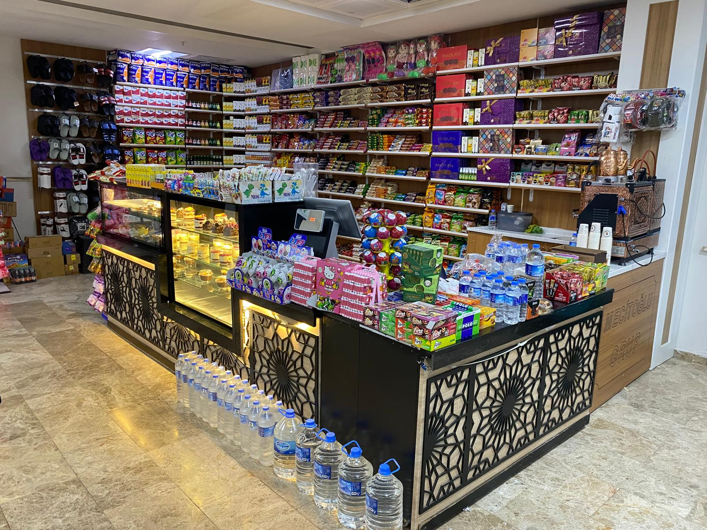
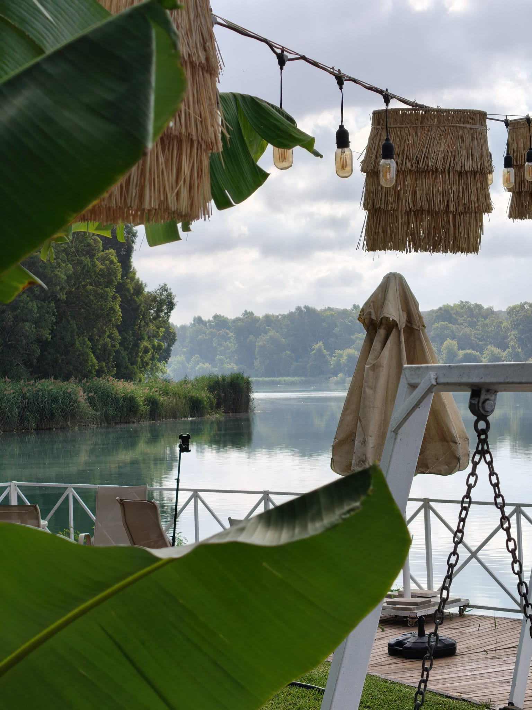
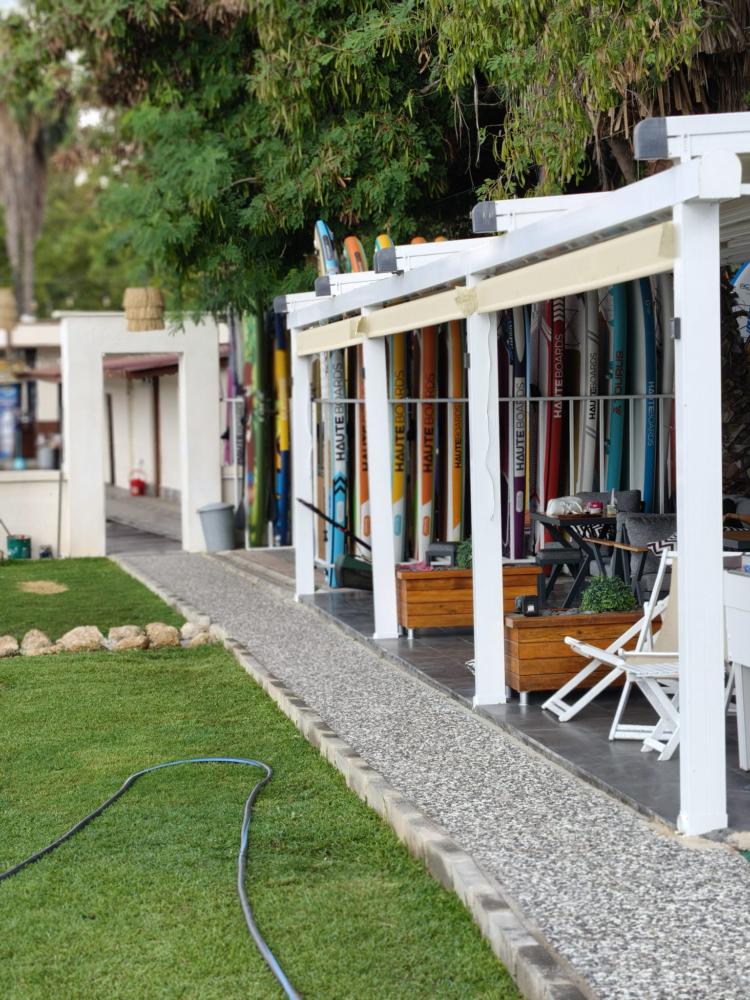
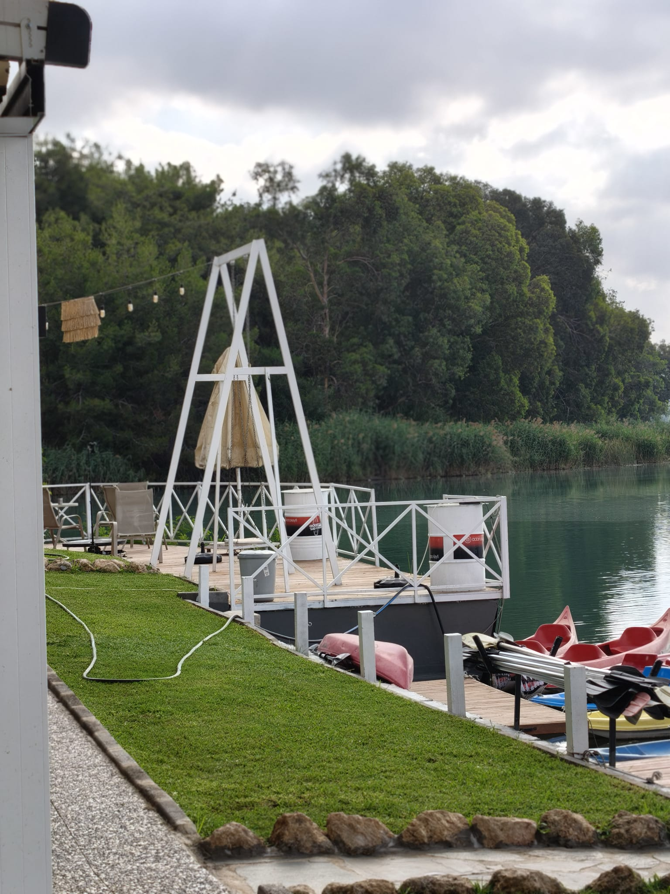
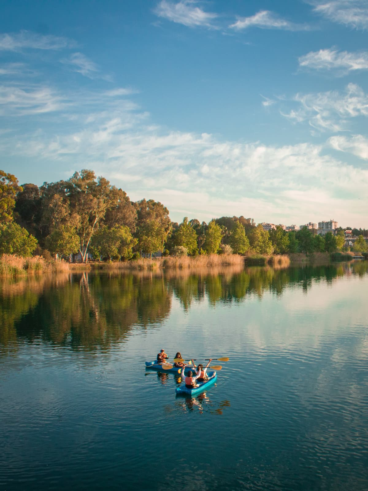
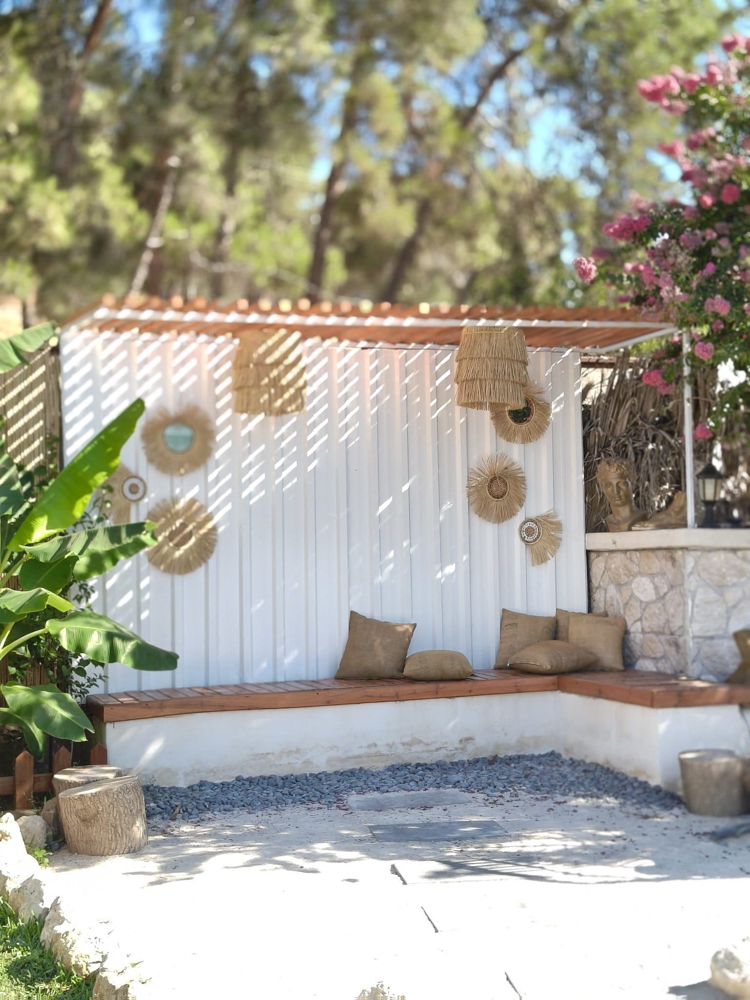

1986Köklü Tecrübe
1986'dan günümüze
Kurumsal işletmecilikte
güven, kalite ve deneyim
Kantin, kafeterya ve catering hizmetlerinde sürdürülebilir kalite anlayışıyla profesyonel çözümler sunuyoruz.
Mecitoğlu Grup Catering
Köklü tecrübe, çağdaş hizmet anlayışı
Mecitoğlu Grup, 1986 yılından bu yana kantin, kafeterya ve catering alanlarında güvenilir ve kurumsal hizmet sunmaktadır.
Hizmet verdiğimiz her noktada hijyen, ürün kalitesi, düzenli operasyon, müşteri memnuniyeti ve sürdürülebilir işletmeciliği temel ilke olarak benimsiyoruz.
Kalite
Ürün ve hizmet standartlarında süreklilik.
Güven
Şeffaf ve sorumluluk sahibi işletmecilik.
Deneyim
1986'dan gelen güçlü saha bilgisi.

Neden Mecitoğlu Grup?
Her noktada aynı kalite standardı
Köklü Tecrübe
1986'dan bu yana biriken operasyon bilgisi.
Türkiye Genelinde Ağ
Farklı bölgelerde sürdürülebilir hizmet modeli.
Kurumsal Disiplin
Tedarik, personel, hijyen ve stok süreçlerinde düzen.
Müşteri Memnuniyeti
Hızlı servis ve ihtiyaçlara duyarlı yaklaşım.
Güçlü Tedarik
Ürün çeşitliliği ve kesintisiz operasyon.
Sürekli Gelişim
Değişen beklentilere uygun modern çözümler.
Hizmet Alanlarımız
Kurumsal ihtiyaçlara profesyonel çözümler
Kantin İşletmeciliği
Hastane, üniversite, okul ve kamu kurumları için düzenli, hızlı ve kaliteli hizmet.
Kafeterya Hizmetleri
Konforlu alanlar, zengin ürün çeşitliliği ve müşteri memnuniyeti odaklı işletmecilik.
Catering Çözümleri
Kurumsal ihtiyaçlara uygun planlı, hijyenik ve sürdürülebilir yiyecek-içecek hizmetleri.
Operasyon Yönetimi
Tedarik, personel, stok, hijyen ve servis süreçlerinin profesyonel yönetimi.
Geçmişten Geleceğe
1986'dan günümüze
Kuruluş
Kalite ve güven temelleri üzerine başlayan yolculuk.
Büyüyen Operasyon
Farklı kurum ve şehirlerde genişleyen hizmet ağı.
Kurumsal Dönüşüm
Modern işletme standartları ve güçlenen ekip yapısı.
Türkiye Genelinde Hizmet
Kantin, kafeterya, catering ve sosyal yaşam işletmeciliği.
Mecitoğlu Grup Deneyimi
Adana Kano Keyfi
Doğayla iç içe, güvenli ve keyifli bir su sporu deneyimi. Kano, SUP ve dinlenme alanlarını aynı çatı altında buluşturan özel bir Mecitoğlu Grup işletmesi.





Kano & SUP
Farklı seviyelere uygun ekipman ve alan.
Doğayla İç İçe
Su ve yeşilin buluştuğu huzurlu ortam.
Dinlenme Alanları
Etkinlik öncesi ve sonrası keyifli sosyal alanlar.
Online Rezervasyon
Kano seansınızı birkaç adımda ayırtın
Müsait tarih ve saatleri Google Takvim üzerinden görüntüleyin. Rezervasyonunuzu oluşturduğunuzda randevu doğrudan işletme takvimine kaydedilir.
- 📅 Tarih ve saat seçimi
- ⏱️ 1 saatlik seans
- ✅ Anında rezervasyon kaydı
- 📱 Telefon ve e-posta ile kolay takip
Adana Kano Keyfi
Rezervasyon sayfası yeni sekmede açılır.
Hemen Rezervasyon Yap
Telefonla bilgi alın: 0539 876 19 08
Bilgilendirme: Rezervasyon saatinizden 15 dakika önce alanda bulunmanız önerilir.
📍
Haritada AçAdana Kano Keyfi KonumuYol tarifi için Google Maps'i açın.
Türkiye Genelinde
Hizmet ağımız
Türkiye genelindeki faaliyet bölgelerimiz sade ve kurumsal bir görünümle işaretlenmiştir.
18 ilde hizmet1986'dan günümüzeTürkiye genelinde
Hizmet Verdiğimiz Yapılar
Kurumsal deneyim alanlarımız
Sağlık Kuruluşları
Hastane ve sağlık tesisi işletmeciliği.
Üniversiteler
Kampüs kantin ve kafeterya hizmetleri.
Eğitim Kurumları
Okul ve eğitim alanlarına uygun çözümler.
Kamu Kurumları
Kurumsal standartlarda sürdürülebilir operasyon.
Fotoğraf Galerisi
Deneyim alanlarımızdan kareler
Kurumsal Kantin & Kafeterya
Adana Kano Keyfi
Kalite ve Güvence
Yönetim sistemi standartlarımız
Kalite, gıda güvenliği, çevre ve iş sağlığı süreçlerimizi uluslararası yönetim sistemi standartları doğrultusunda yürütüyoruz.
ISO
Kalite Yönetim Sistemi
ISO 9001
Hizmet kalitesinde sürdürülebilirlik ve sürekli iyileştirme.
ISO
Çevre Yönetim Sistemi
ISO 14001
Çevresel etkilerin kontrollü ve sorumlu biçimde yönetilmesi.
ISO
Gıda Güvenliği Yönetim Sistemi
ISO 22000
Gıda güvenliği risklerinin sistematik biçimde kontrolü.
ISO
İş Sağlığı ve Güvenliği
ISO 45001
Çalışan sağlığı, güvenliği ve risk yönetimi odaklı yaklaşım.
TSE
Hizmet Yeterlilik Standardı
TS 13284
Yiyecek ve içecek hizmetlerinin kalite ve yeterlilik kriterleri.
TÜRKAK
Akreditasyon Güvencesi
Akredite Belgelendirme
TÜRKAK akreditasyonlu kuruluşlarca düzenlenen belgeler için ayrılmış kurumsal alan.
Belge numaraları, geçerlilik tarihleri ve PDF kopyaları güvenli yayın öncesinde şirket kayıtlarıyla eşleştirilerek eklenecektir.
Haberler ve Duyurular
Mecitoğlu Grup'tan gelişmeler
Kurumsal gelişmeler, kalite çalışmaları ve marka duyuruları bu alanda paylaşılır.
Türkiye genelinde büyüyen hizmet ağı
Kurumsal hizmet kapasitemizi, kalite standartlarımızı ve operasyonel gücümüzü sürekli geliştiriyoruz.
Online rezervasyon dönemi başladı
Misafirlerimiz artık uygun tarih ve saatleri görüntüleyerek kano rezervasyonlarını çevrim içi oluşturabiliyor.
Standartlarla güçlenen hizmet anlayışı
ISO yönetim sistemleri ve TS 13284 standardı doğrultusunda kalite, hijyen ve güvenlik süreçlerimizi geliştiriyoruz.
Kurumsal İş Birliği
Teklif ve ön görüşme talebi oluşturun
Kantin, kafeterya, catering veya işletme yönetimi ihtiyaçlarınız için bilgilerinizi bırakın. Form, e-posta uygulamanızda hazır bir mesaj oluşturur.
İletişim
Kurumsal çözümler için bizimle iletişime geçin
Hizmetlerimiz hakkında bilgi almak ve iş birliği fırsatlarını görüşmek için bize ulaşabilirsiniz.
Kalite • Güven • Deneyim